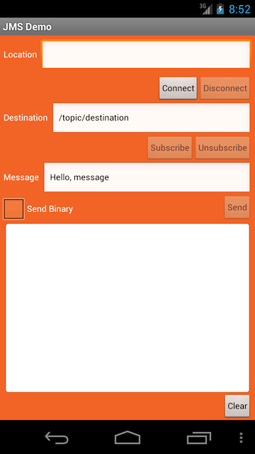

In this procedure, you will learn how to create an Android JMS Client using the Kaazing Enterprise Android JMS Client API. You will learn how to create an Android Studio project and add the necessary Java classes in order to use the Android JMS Client API. You will learn how to implement the Android JMS Client API methods to enable your Android client to send and receive messages to a JMS broker via a local or publicly available Gateway.
Note: For this how-to, we describe how to use both a local and a publicly available Gateway and JMS broker. The public address is wss://demos.kaazing.com/jms. Locally, you can use any JMS-compliant message broker. By default, the Gateway is configured to connect to the broker on tcp://localhost:61613. You can configure the connect URL in the file GATEWAY_HOME/conf/gateway-config.xml. See About Integrating Kaazing Gateway and JMS-Compliant Message Brokers for more information.
To send messages, add a MessageProducer object. The following example responds to when a user clicks a Send button. It uses a try/catch statement to send the message, and an if/else statement to send either binary or text messages. You will also note that this function uses ansynchronous dispatch, dispatchQueue.dispatchAsync(new Runnable(), defined in a separate file named DispatchQueue.java.
sendBtn.setOnClickListener(new OnClickListener() {
public void onClick(View v) {
hideKeyboard(); // hide the keyboard
final boolean sendBinary = sendBinaryCheckBox.isChecked(); // check if Binary checkbox selected
final String text = messageText.getText().toString(); // get the message enter by user
logMessage("SEND: " + text); // log the message text
dispatchQueue.dispatchAsync(new Runnable() { // run as a separate, ansynchronous thread
public void run() {
try {
String destinationName = destinationText.getText().toString(); // get the destination submitted by user
// create a MessageProducer to send messages to the specified destination
MessageProducer producer = session.createProducer(getDestination(destinationName));
Message message;
if (sendBinary) { // construct binary message
BytesMessage bytesMessage = session.createBytesMessage();
bytesMessage.writeUTF(text);
message = bytesMessage;
}
else { // use text message
message = session.createTextMessage(text);
}
producer.send(message); // send the message to the destination for the producer
producer.close(); // close the message producer when not needed
} catch (JMSException e) { // catch and write exceptions to the log console
e.printStackTrace();
logMessage(e.getMessage());
}
}
});
}
});
To receive or consume messages, add a MessageListener object. The function manages both text and binary messages, and instances of MapMessage (used to send a set of name-value pairs).
private class DestinationMessageListener implements MessageListener {
public void onMessage(Message message) { //respond when a message is received
try {
if (message instanceof TextMessage) { // log test messages in the UI console
logMessage("RECEIVED TextMessage: " + ((TextMessage)message).getText());
}
else if (message instanceof BytesMessage) { // manage binary using BytesMessage
BytesMessage bytesMessage = (BytesMessage)message;
long len = bytesMessage.getBodyLength(); // order the binary and display hex in console
byte b[] = new byte[(int)len];
bytesMessage.readBytes(b);
logMessage("RECEIVED BytesMessage: " + hexDump(b)); // see this function below
}
else if (message instanceof MapMessage) { // manage MapMessage pairs, text or binary
MapMessage mapMessage = (MapMessage)message;
Enumeration mapNames = mapMessage.getMapNames();
while (mapNames.hasMoreElements()) {
String key = (String)mapNames.nextElement();
Object value = mapMessage.getObject(key);
if (value == null) {
logMessage(key + ": null");
} else if (value instanceof byte[]) {
byte[] arr = (byte[])value;
StringBuilder s = new StringBuilder(); // see this function below
s.append("[");
for (int i = 0; i < arr.length; i++) {
if (i > 0) {
s.append(",");
}
s.append(arr[i]);
}
s.append("]");
logMessage(key + ": "+ s.toString() + " (Byte[])"); // display binary name and value pairs
} else {
logMessage(key + ": " + value.toString() + " (" + value.getClass().getSimpleName() + ")"); // display text name and value pairs
}
}
logMessage("RECEIVED MapMessage: ");
}
else {
logMessage("UNKNOWN MESSAGE TYPE: "+message.getClass().getSimpleName());
}
}
catch (Exception ex) { // handle exceptions
ex.printStackTrace();
logMessage("EXCEPTION: " + ex.getMessage());
}
}
private String hexDump(byte[] b) { // convert the binary to hexadecimal and return
if (b.length == 0) {
return "empty";
}
StringBuilder out = new StringBuilder(); // convert MapMessage binary to hexadecimal pairs and return
for (int i=0; i < b.length; i++) {
out.append(Integer.toHexString(b[i])).append(' ');
}
return out.toString();
}
}
Build the Kaazing Android JMS Messaging Tutorial App
In this procedure you will do the following major steps (these step numbers do not correspond to the procedure step numbers directly):
Install the Kaazing Enterprise Android Client SDK.
Set up an Android project in Android Studio.
Import the Kaazing Gateway Android and JMS API libraries.
Create the Android client Touch User Interface (TUI).
Add a dispatch queue class to the Android client.
Add the import statements for the common Java and Android classes.
Add the import statements for the Kaazing Gateway Android JMS Client API classes.
Add the variables for the program.
Add the onCreate() method with event listeners.
Add the connect() and disconnect() methods.
Add the getDestination() method for creating topics and queues.
Add the ConnectionExceptionListener class to handle when a JMS provider detects an exception.
Add the DestinationMessageListener class and onMessage() method to manage messages.
Add the methods for when the client is paused, resumes, and when the client is closed.
Add the methods for updating the Connect and Disconnect buttons.
Run the Android client in the Android Emulator.
Test the Android client in the Android Emulator.
Install the Kaazing Enterprise Android Client SDK. Download the Kaazing Enterprise Android Client SDK as described in Setting Up the Gateway and Clients.
In Configure your new project, in Application Name, name the project jms.
In Company Name, enter mycompany.example.com.
In Package Name, click Edit, enter com.kaazing.gateway.jms.client.demo, and click Done.
In Project location, enter or browse to a location for your project. The location path cannot contain spaces.
Click Next.
In Select the form factors your app will run on, enable Phone and Tablet.
In Minimum SDK, choose API 19: Android 4.4 (KitKat) and click Next.
On Add an Activity to Mobile, click Empty Activity, and click Next.
In Customize the Activity, in Activity Name, enter JMSDemoActivity.
In Layout Name enter main (ensure that the Activity Name is still JMSDemoActivity) and click Finish. If there are dependencies that you need to install, the Finish button is not available. The new project is generated.
Import the Kaazing Android SDK libraries. You can import the libraries in a number ways, such as using a .zip or Maven, as described on kaazing.com/download. Follow the steps for the method you want to use.
Here is an example app/build.gradle configuration:
Update the AndroidManifest.xml file. Open the AndroidManifest.xml file in app/src/main/AndroidManifest.xml and replace its contents with the following (the code is available here also):
Add the icon for the app. This is the icon that appears on the home screen of the device. Drag the icon from the Android demo folder java.client.tutorials/android/jms/res/drawable-hdpi/icon.png to the drawable-hdpi folder in your project at app/src/main/res/drawable-hdpi.
Delete the automatically generated styles.xml file in your project at app/src/main/res/values. This file isn't needed in the project and can cause errors.
Create the Android client Touch User Interface (TUI). Next you will add the text strings and layout for the Android client TUI. When you are finished, the Android client will look like this:

Figure: Android JMS Client TUI
Open the strings.xml file located at jms/res/values/strings.xml and replace its contents with the following:
Important: When pasting text into Android Studio, whitespace will likely be included and cause errors in your project. To avoid this problem, you can paste text into a text editor first, copy it from there, and paste it into Android Studio. Alternatively, you can copy the text from the files stored in Github here: https://github.com/kaazing/java.client.tutorials/tree/develop/android/jms.
Open the dimens.xml file from app/src/main/res/values/dimens.xml and replace its contents with the following:
Add a dispatch queue class to the Android client. A dispatch queue class is used to run tasks in a separate thread from the main thread (to run some tasks asynchronously). The dispatch queue class is used to add Runnable in a queue. Runnable will be run in a first-in first-out basis. All of the blocking calls of the Android client will be run in a background thread so that the TUI is not blocked and can remain responsive.
Right-click the package com.kaazing.gateway.client.demo, click New, and click Class.
In Name enter DispatchQueue and click Finish. The new DispatchQueue.java class is added to the src folder.
package com.kaazing.gateway.jms.client.demo;
import android.os.Handler;
import android.os.HandlerThread;
/**
* The class is used to add Runnable in a queue and the runnable added to the queue
* will be run in a first in first out basis. This class is useful to run a series of tasks
* sequentially in a separate thread from the main thread.
*
*/
public class DispatchQueue extends HandlerThread {
private Handler handler;
public DispatchQueue(String name) {
super(name);
}
/**
* The message blocks until the thread is started. This should be called
* after call to start() to ensure the thread is ready.
*/
public void waitUntilReady() {
handler = new Handler(getLooper());
}
/**
* Adds the Runnable to the message queue which will be run on the thread.
* The runnable will be run in a first in first out basis.
*/
public void dispatchAsync(Runnable task) {
handler.post(task);
}
public void removePendingJobs() {
handler.removeCallbacksAndMessages(null);
}
}
Modify the main class for the Android client. In the src folder for the project, under com.kaazing.gateway.jms.client.demo, double-click JMSDemoActivity.java. You will add the main Java code for the Android client in this file.
Delete all of the contents except the com.kaazing.gateway.jms.client.demo package declaration and the JMSDemoActivity class declaration:
package com.kaazing.gateway.jms.client.demo;
// Import statements will go here
public class JMSDemoActivity extends FragmentActivity {
// the remaining code will go here
}
Add the import statements for the common Java and Android classes. Add the statements directly after the package com.kaazing.gateway.jms.client.demo package declaration:
// General classes used for the program
import java.net.PasswordAuthentication;
import java.net.URI;
import java.util.ArrayDeque;
import java.util.Enumeration;
import java.util.HashMap;
import java.util.concurrent.Semaphore;
import java.util.logging.Level;
import java.util.logging.Logger;
// These classes are used for JMS connections and messages
import javax.jms.BytesMessage;
import javax.jms.Connection;
import javax.jms.Destination;
import javax.jms.ExceptionListener;
import javax.jms.JMSException;
import javax.jms.MapMessage;
import javax.jms.Message;
import javax.jms.MessageConsumer;
import javax.jms.MessageListener;
import javax.jms.MessageProducer;
import javax.jms.Session;
import javax.jms.TextMessage;
// These classes are used for the TUI
import android.os.Bundle;
import android.support.v4.app.FragmentActivity;
import android.text.method.ScrollingMovementMethod;
import android.util.Log;
import android.view.View;
import android.view.View.OnClickListener;
import android.widget.Button;
import android.widget.CheckBox;
import android.widget.EditText;
import android.widget.TextView;
Add the import statements for the Kaazing Gateway Android JMS Client API classes.
// Include these statements with any client
import com.kaazing.net.ws.WebSocketFactory; // WebSocket
import com.kaazing.gateway.jms.client.JmsConnectionFactory; // JMS
import com.kaazing.gateway.jms.client.ConnectionDisconnectedException; // Exceptions
import com.kaazing.gateway.jms.client.util.Tracer; // Logging
// Include these statements when a client must authenticate with the Gateway
import com.kaazing.net.auth.BasicChallengeHandler;
import com.kaazing.net.auth.ChallengeHandler;
import com.kaazing.net.auth.LoginHandler;
Under the // the remaining code will go here comment, add the variables for the program, and a method for hiding the keyboard since the app will be pre-loaded with a URL.
public class JMSDemoActivity extends FragmentActivity {
// Log API for send output to the log
private static String TAG = "com.kaazing.gateway.jms.client.android.demo";
// Button variables
private Button connectBtn;
private Button disconnectBtn;
private Button subscribeBtn;
private Button unsubscribeBtn;
private Button sendBtn;
private Button clearBtn;
private CheckBox sendBinaryCheckBox;
// Text variables
private EditText locationText;
private EditText destinationText;
private EditText messageText;
private TextView logTextView;
// Connection variables
private JmsConnectionFactory connectionFactory;
private Connection connection;
private Session session;
// Dispatch queue
private DispatchQueue dispatchQueue;
// Hash map holds active consumer instances created with destination string as a key
private HashMap<String, ArrayDeque<MessageConsumer>> consumers = new HashMap<String,
ArrayDeque<MessageConsumer>>();
// Hide keyboard
private void hideKeyboard() {
InputMethodManager imm = (InputMethodManager) getSystemService(Activity.INPUT_METHOD_SERVICE);
imm.toggleSoftInput(InputMethodManager.HIDE_IMPLICIT_ONLY, 0);
}
The hash map uses an array deque for the MessageConsumer object. Array deques hold multiple elements prior to processing (deques) and have no capacity restrictions; they grow as necessary to support usage.
Add the onCreate() method with event listeners.
The onCreate() method is called when the activity is first created. This is a long method that includes event listeners for user actions in the TUI. The method also contains the JmsConnectionFactory() API call. The JmsConnectionFactory() is the JMS client implementation of ConnectionFactory. JmsConnectionFactory() is used to create a connection with a JMS provider via a WebSocket connection. JmsConnectionFactory() provides the ability to set the Gateway location dynamically.
@Override
public void onCreate(Bundle savedInstanceState) {
super.onCreate(savedInstanceState);
Log.i(TAG, "onCreate");
setContentView(R.layout.main);
// Create variables for the TUI elements
connectBtn = (Button)findViewById(R.id.connectBtn);
disconnectBtn = (Button)findViewById(R.id.disconnectBtn);
subscribeBtn = (Button)findViewById(R.id.subscribeBtn);
unsubscribeBtn = (Button)findViewById(R.id.unsubscribeBtn);
sendBtn = (Button)findViewById(R.id.sendBtn);
clearBtn = (Button)findViewById(R.id.clearBtn);
sendBinaryCheckBox = (CheckBox)findViewById(R.id.sendBinaryCheckBox);
locationText = (EditText)findViewById(R.id.locationText);
destinationText = (EditText)findViewById(R.id.destinationText);
messageText = (EditText)findViewById(R.id.messageText);
logTextView = (TextView)findViewById(R.id.logView);
logTextView.setMovementMethod(new ScrollingMovementMethod());
// Create the JMS connection factory and the underlying WebSocket factory
// to create and establish WebSocket connection to send and receive
// JMS data over a WebSocket connection.
if (connectionFactory == null) {
try {
connectionFactory = JmsConnectionFactory.createConnectionFactory();
WebSocketFactory webSocketFactory = connectionFactory.getWebSocketFactory();
// setDefaultFollowRedirect() sets the default HttpRedirectPolicy that is
// inherited by all the WebSockets created using this factory instance.
webSocketFactory.setDefaultFollowRedirect(HttpRedirectPolicy.SAME_DOMAIN);
} catch (JMSException e) {
e.printStackTrace();
logMessage("EXCEPTION: " + e.getMessage());
}
}
// Run when Connect button is clicked
connectBtn.setOnClickListener(new OnClickListener() {
public void onClick(View v) {
connectBtn.setEnabled(false);
dispatchQueue = new DispatchQueue("DispatchQueue");
dispatchQueue.start();
dispatchQueue.waitUntilReady();
// Call the connect() method defined later in this code
connect();
}
});
// Run when Disconnect button is clicked
disconnectBtn.setOnClickListener(new OnClickListener() {
public void onClick(View v) {
// Call the disconnect() method defined later in this code
disconnect();
}
});
// Run when Subscribe button is clicked
subscribeBtn.setOnClickListener(new OnClickListener() {
public void onClick(View v) {
// Get the destination name entered by the user
final String destinationName = destinationText.getText().toString();
logMessage("SUBSCRIBE - " + destinationName);
dispatchQueue.dispatchAsync(new Runnable() {
public void run() {
try {
Destination destination = getDestination(destinationName);
if (destination == null) {
return;
}
// Create a consumer using the destination
MessageConsumer consumer = session.createConsumer(destination);
// Create an array deque mapping consumers to the destination
ArrayDeque<MessageConsumer> consumersToDestination =
consumers.get(destinationName);
// If there is no consumers to destination map, add this new map
if (consumersToDestination == null) {
consumersToDestination = new ArrayDeque<MessageConsumer>();
consumers.put(destinationName, consumersToDestination);
}
// If there is a map, update it with the new consumer
consumersToDestination.add(consumer);
// Set a message listener in the DestinationMessageListener() method
consumer.setMessageListener(new DestinationMessageListener());
} catch (JMSException e) {
e.printStackTrace();
logMessage("EXCEPTION: " + e.getMessage());
}
}
});
}
});
// Run when Unsubscribe button is clicked
unsubscribeBtn.setOnClickListener(new OnClickListener() {
public void onClick(View v) {
// Clear the queue created in subscribeBtn.setOnClickListener()
String destinationName = destinationText.getText().toString();
logMessage("UNSUBSCRIBE - " + destinationName);
ArrayDeque<MessageConsumer> consumersToDestination = consumers.get(destinationName);
if (consumersToDestination == null) {
return;
}
// Make MessageConsumer equal to the first element in the array deque
final MessageConsumer consumer = consumersToDestination.poll();
if (consumer == null) {
return;
}
dispatchQueue.dispatchAsync(new Runnable() {
public void run() {
try {
// Close the consumer
consumer.close();
} catch (JMSException e) {
e.printStackTrace();
logMessage(e.getMessage());
}
}
});
}
});
// Run when Send button is clicked
sendBtn.setOnClickListener(new OnClickListener() {
public void onClick(View v) {
// Get the message text
final boolean sendBinary = sendBinaryCheckBox.isChecked();
final String message = messageText.getText().toString();
logMessage("SEND: " + message);
dispatchQueue.dispatchAsync(new Runnable() {
public void run() {
try {
// Get the destination for the message
String destinationName = destinationText.getText().toString();
// Create a MessageProducer to send messages to the destination
MessageProducer producer =
session.createProducer(getDestination(destinationName));
// Add the message
Message message;
// Determine if the message is binary or text
if (sendBinary) {
BytesMessage bytesMessage = session.createBytesMessage();
bytesMessage.writeUTF(text);
message = bytesMessage;
}
else {
message = session.createTextMessage(text);
}
// Send the message
producer.send(message);
// Close the producer
producer.close();
} catch (JMSException e) {
e.printStackTrace();
logMessage(e.getMessage());
}
}
});
}
});
// Run when Clear button is clicked
clearBtn.setOnClickListener(new OnClickListener() {
public void onClick(View v) {
// Clear the log
logTextView.setText("");
}
});
}
Add the connect() and disconnect() methods for connecting to the Gateway and updating the TUI.
private void connect() {
logMessage("CONNECTING");
// Since createConnection() is a blocking method that does not return until
// the connection is established or fails, it is a good practice to
// establish the connection on a separate thread and prevent the TUI from being blocked.
dispatchQueue.dispatchAsync(new Runnable() {
public void run() {
try {
// Get the location entered by the user
String location = locationText.getText().toString();
// Set the target Gateway location
connectionFactory.setGatewayLocation(URI.create(location));
// Create the connection to the Gateway
connection = connectionFactory.createConnection();
// Connect to the Gateway
connection.start();
// Create a Session object and set the client to
// acknowledge any messages it receives automatically
session = connection.createSession(false, Session.AUTO_ACKNOWLEDGE);
logMessage("CONNECTED");
// Set an exception listener for the client
connection.setExceptionListener(new ConnectionExceptionListener());
// Update the TUI
updateButtonsForConnected();
} catch (Exception e) {
updateButtonsForDisconnected();
e.printStackTrace();
logMessage("EXCEPTION: " + e.getMessage());
}
}
});
}
private void disconnect() {
logMessage("DISCONNECTING");
// Clear the queue of any pending messages
dispatchQueue.removePendingJobs();
dispatchQueue.quit();
new Thread(new Runnable() {
public void run() {
try {
// Close the connection
connection.close();
logMessage("DISCONNECTED");
} catch (JMSException e) {
e.printStackTrace();
logMessage("EXCEPTION: " + e.getMessage());
}
finally {
connection = null;
// Update the TUI with the connection status
updateButtonsForDisconnected();
}
}
}).start();
}
For more information on sessions and exception listeners, see the Java Connection interface.
Add the getDestination() method for creating topics and queues.
private Destination getDestination(String destinationName) throws JMSException {
Destination destination;
// Create the topic using the destination name entered by the user
if (destinationName.startsWith("/topic/")) {
destination = session.createTopic(destinationName);
}
// Create the queue using the destination name entered by the user
else if (destinationName.startsWith("/queue/")) {
destination = session.createQueue(destinationName);
}
else {
logMessage("Invalid destination name: " + destinationName);
return null;
}
return destination;
}
Notes:
When setting up your message consumers and producers, you must use the format "/topic/" for regular topics.
Add the DestinationMessageListener class and onMessage() method to manage messages. For more information, see the Java MessageListener interface.
private class DestinationMessageListener implements MessageListener {
// Run when a message is received
public void onMessage(Message message) {
// This try block is used to handle both text and binary messages
try {
if (message instanceof TextMessage) {
logMessage("RECEIVED TextMessage: " + ((TextMessage)message).getText());
}
else if (message instanceof BytesMessage) {
BytesMessage bytesMessage = (BytesMessage)message;
long len = bytesMessage.getBodyLength();
byte b[] = new byte[(int)len];
// Read a portion of the bytes message stream equal to its length
bytesMessage.readBytes(b);
// Send the bytes to the hexDump() method and display the string returned
logMessage("RECEIVED BytesMessage: " + hexDump(b));
}
// This condition provides support for the Java MapMessage interface.
// This client receives MapMessage messages, but it does not send them.
// Review the Android JMS API for information on reading MapMessage messages.
else if (message instanceof MapMessage) {
MapMessage mapMessage = (MapMessage)message;
Enumeration mapNames = mapMessage.getMapNames();
while (mapNames.hasMoreElements()) {
String key = (String)mapNames.nextElement();
Object value = mapMessage.getObject(key);
if (value == null) {
logMessage(key + ": null");
} else if (value instanceof byte[]) {
byte[] arr = (byte[])value;
StringBuilder s = new StringBuilder();
s.append("[");
for (int i = 0; i < arr.length; i++) {
if (i > 0) {
s.append(",");
}
s.append(arr[i]);
}
s.append("]");
logMessage(key + ": "+ s.toString() + " (Byte[])");
} else {
logMessage(key + ": " + value.toString() +
" (" + value.getClass().getSimpleName() + ")");
}
}
logMessage("RECEIVED MapMessage: ");
}
else {
logMessage("UNKNOWN MESSAGE TYPE: "+message.getClass().getSimpleName());
}
}
catch (Exception ex) {
ex.printStackTrace();
logMessage("EXCEPTION: " + ex.getMessage());
}
}
// Return a string representation of the bytes received
private String hexDump(byte[] b) {
if (b.length == 0) {
return "empty";
}
StringBuilder out = new StringBuilder();
for (int i=0; i < b.length; i++) {
out.append(Integer.toHexString(b[i])).append(' ');
}
return out.toString();
}
}
For more information on byte streams, see the Java BytesMessage interface. For more information on MapMessage, see the Java MapMessage interface.
Add the methods for when the client is paused, resumes, and when the client is closed.
// Run when the client is paused
public void onPause() {
if (connection != null) {
// Stop the connection in a separate thread
dispatchQueue.dispatchAsync(new Runnable() {
@Override
public void run() {
try {
connection.stop();
} catch (JMSException e) {
e.printStackTrace();
}
}
});
}
super.onPause();
}
// Restart the connection when the client resumes activity
public void onResume() {
if (connection != null) {
dispatchQueue.dispatchAsync(new Runnable() {
@Override
public void run() {
try {
connection.start();
} catch (JMSException e) {
e.printStackTrace();
}
}
});
}
super.onResume();
}
// Disconnect with the client is shutdown
public void onDestroy() {
if (connection != null) {
disconnect();
}
super.onDestroy();
}
Add the methods for updating the Connect and Disconnect buttons according to the state of the WebSocket connection.
// Run when the client is connected
private void updateButtonsForConnected() {
runOnUiThread(new Runnable() {
public void run() {
connectBtn.setEnabled(false);
disconnectBtn.setEnabled(true);
subscribeBtn.setEnabled(true);
unsubscribeBtn.setEnabled(true);
sendBtn.setEnabled(true);
}
});
}
// Run when the client is disconnected
private void updateButtonsForDisconnected() {
runOnUiThread(new Runnable() {
public void run() {
connectBtn.setEnabled(true);
disconnectBtn.setEnabled(false);
subscribeBtn.setEnabled(false);
sendBtn.setEnabled(false);
unsubscribeBtn.setEnabled(false);
}
});
}
Add the logMessage() method for the Log area displayed in the client. This method keeps the log to a 100 line maximum.
If you are using a local Gateway to test your Android JMS client, update the jms service on the Gateway configuration file to accept on your local IP address. If you are using the publicly available Gateway and JMS broker at wss://demos.kaazing.com/jms, you can skip this step.
Open the Gateway configuration file located at GATEWAY_HOME/conf/gateway-config.xml.
Modify the jms service to accept connections containing your local IP address (replace local-ip-address with your IP address):
If you are using a local broker, then start the broker. For the Apache ActiveMQ broker provided by Kaazing, see Setting Up the Gateway and Clients.
Run the Android client in the Android Emulator. Click the Run arrow, select or create a Deployment Target (with a minimum API 19: Android 4.4), and click OK. The Android emulator launches.
Note: The Android Emulator can be slow and resource intensive. Another option for running Android apps on your computer is Genymotion.
Figure: Android JMS Client in the Android Emulator
Test the Android client in the Android Emulator.
In the Location field, enter either the URI used by the publicly available Gateway and JMS broker provided by Kaazing, wss://demos.kaazing.com/jms, or enter the local address ws://local-ip-address:8001/jms using your local IP address. For example, ws://192.168.0.103:8001/jms.
Click Connect. The messages CONNECTING and then CONNECTED appear. The WebSocket connection to the Gateway and JMS broker was successful.
Click Subscribe. The message SUBSCRIBE - /topic/destination appears. You have subscribed to the destination.
Click Send. The following messages appear: RECEIVED TextMessage: Hello, message
SEND: Hello, message
You sent a message Hello, message to the destination and received the same message because you are subscribed to that destination.
Click the Send Binary checkbox and click Send again. The following messages appear: SEND BytesMessage: Hello, message
RECEIVED BytesMessage: 0,14,72,101,108,108,111,44,32,109,101,115,115,97,103,101